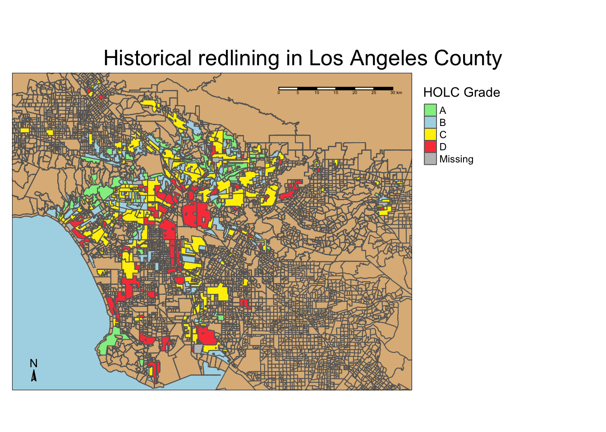
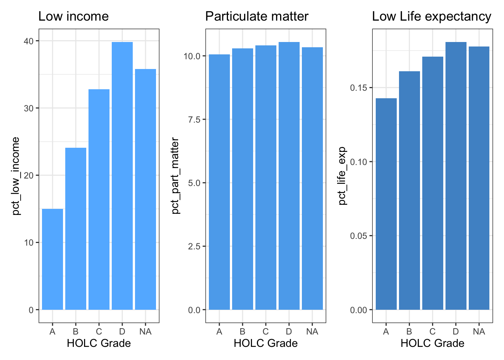
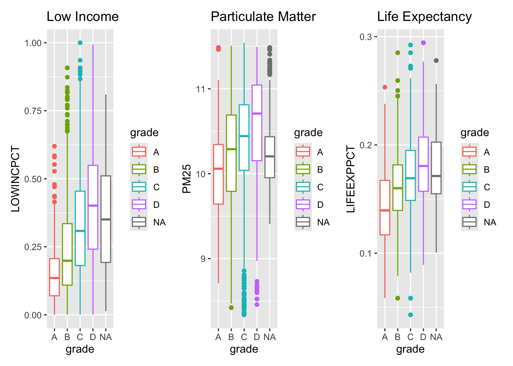
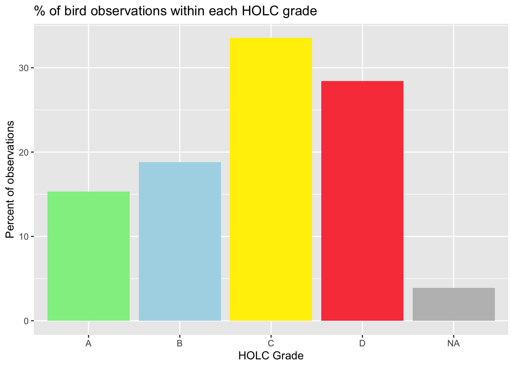

# Load libraries
library(here)
library(tidyverse)
library(ggplot2)
library(sf)
library(tmap)
library(patchwork)
library(dplyr)
library(kableExtra)
library(testthat)The environmental impacts of redlining in LA County
Exploring patterns of environmental justice
Part 1: Legacy of redlining in current environmental (in)justice
# Read in ej screen data
ej_df <- st_read(here('data','ejscreen','EJSCREEN_2023_BG_StatePct_with_AS_CNMI_GU_VI.gdb'))
# Read in HOLC grade data
holc_df <- st_read(here('data','mapping-inequality','mapping-inequality-los-angeles.json')) %>%
filter(st_is_valid(.))
# Read in birds data
birds_df <- st_read(here('data','gbif-birds-LA','gbif-birds-LA.shp'))# Subset the ej_df to just include Los Angeles County
# The ID filtering takes out the buffer around the ocean
la_ej_df <- ej_df %>%
filter(CNTY_NAME=='Los Angeles County' & ID != "060379901000"& ID != "060379903000" & ID != "060379902000")
# Subset the ej_df to just include California, again filtering to take out the buffer
ca_df <- ej_df %>%
filter(ST_ABBREV == "CA" & ID != "060379901000" & ID != "060379903000" & ID != "060379902000")# Initial map of LA County EJ with HOLC grades layered on top
tm_shape(ca_df, bbox = holc_df) + # Basemap of California
tm_polygons(col = "burlywood") +
tm_shape(la_ej_df) + # LA EJ data layer
tm_borders() +
tm_shape(holc_df) + # Add in HOLC grade data
tm_polygons('grade',
palette = c('A' = 'lightgreen',
'B' = 'lightblue',
'C' = '#FFEF00',
'D' = '#F94449'),
title = "HOLC Grade") +
tm_layout(main.title = "Historical redlining in Los Angeles County",
main.title.position = "center",
bg.color = "lightblue",
legend.outside = TRUE) +
tm_scale_bar(position = c("right","top"), # Add and position scale bar
text.size = 0.3) +
tm_compass(position = c("left","bottom"), # Add and position North arrow
size = 0.8)
# Summarize the percent of current census block groups within each HOLC grade
# Check that la_ej_df and holc_df have the same CRS
# print(st_crs(holc_df) == st_crs(la_ej_df))
# Transform the CRS to be the same
holc_df_transform <- st_transform(holc_df, crs = st_crs(la_ej_df))
# Build in check to make sure that the transformation worked
if(st_crs(holc_df_transform) == st_crs(la_ej_df)){
print("it's a match!")
} else {
warning("coordinate reference systems do not match")
}[1] "it's a match!"# Join la_ej_df to the holc_df in order to
combined_df <- st_join(holc_df_transform, la_ej_df, join = st_intersects)# Use combined_df to make summary table
census_groups <- combined_df %>%
group_by(grade) %>% # group by grade
summarize(census_block_count = n()) %>%
mutate(percentage = census_block_count/sum(census_block_count)*100) %>% # Divide count by number of rows to get percentage (when you multiply by 100)
st_drop_geometry() # Get rid of geometry column
kbl(census_groups, col.names = c("Grade", "Count", "% of census block")) # Output as a table with correct column names| Grade | Count | % of census block |
|---|---|---|
| A | 449 | 7.484581 |
| B | 1206 | 20.103351 |
| C | 2748 | 45.807635 |
| D | 1300 | 21.670278 |
| NA | 296 | 4.934156 |
# Build in test to make sure that the observation percentages add to 100%
test_that("Observation percentages add up to 100%", {expect_true(sum(census_groups$percentage) == 100)})Test passed 🎊# Create a set of figures summarizing current conditions within HOLC grades
current_conditions <- combined_df %>%
group_by(grade) %>%
summarize(pct_low_income = mean(LOWINCPCT, na.rm=TRUE)*100, # Multiply by 100 to look more like a percentage
pct_part_matter = mean(PM25, na.rm=TRUE),
pct_life_exp = mean(LIFEEXPPCT, na.rm=TRUE)) %>%
st_drop_geometry() # Drop geometry column
kbl(current_conditions, col.names = c("Grade", "% Low Income", "Particulate Matter", "Life Expectancy"))| Grade | % Low Income | Particulate Matter | Life Expectancy |
|---|---|---|---|
| A | 14.97511 | 10.05245 | 0.1427607 |
| B | 24.08918 | 10.29112 | 0.1610915 |
| C | 32.81248 | 10.40763 | 0.1708463 |
| D | 39.80776 | 10.54329 | 0.1807672 |
| NA | 35.81823 | 10.33616 | 0.1776904 |
# Trial graph of one condition in order to see what works
#ggplot(current_conditions) +
# geom_col(aes(x = grade, y = pct_low_income))# Create individual plot for low income condition
p1 <- ggplot(current_conditions) +
geom_col(aes(x = grade, y = pct_low_income), fill = "steelblue1") +
ggtitle("Low income") +
labs(x = "HOLC Grade") +
theme_bw()
# Create individual plot for particulate matter condition
p2 <- ggplot(current_conditions) +
geom_col(aes(x = grade, y = pct_part_matter), fill = "steelblue2") +
ggtitle("Particulate matter") +
labs(x = "HOLC Grade") +
theme_bw()
# Create individual plot for low life expectancy condition
p3 <- ggplot(current_conditions) +
geom_col(aes(x = grade, y = pct_life_exp), fill = "steelblue3") +
ggtitle("Low Life expectancy") +
labs(x = "HOLC Grade") +
theme_bw()
# Use patchwork to put these three bar plots into one figure
p4 <- p1+p2+p3
p4
# Create individual box plot for low income condition
low_inc_plot <- ggplot(combined_df, aes(x = grade, y = LOWINCPCT)) +
geom_boxplot(aes(x = grade, y = LOWINCPCT, colour = grade)) +
labs(title = "Low Income")
# Create individual box plot for particulate matter condition
pm25_plot <- ggplot(combined_df, aes(x = grade, y = PM25)) +
geom_boxplot(aes(x = grade, y = PM25, colour = grade)) +
labs(title = "Particulate Matter")
# Create individual box plot for life expectancy condition
life_exp_plot <- ggplot(combined_df, aes(x = grade, y = LIFEEXPPCT)) +
geom_boxplot(aes(x = grade, y = LIFEEXPPCT, colour = grade))+
labs(title = "Life Expectancy")
# Use patchwork to combine these boxplots into one figure
comb_box_plot <- low_inc_plot + pm25_plot + life_exp_plot
comb_box_plot
The results of this summary table tell us that as we move from grade A to D, all three of these variables steadily rises. This means that the percentage of low income folk, the percentile for PM 2.5, and the percentile for low life expectancy all increase as we go to lower grades. The percentage of low income people increases the most dramatically out of these variables.
Part 2: Legacy of redlining in biodiversity observations
birds_2022_df <- birds_df %>%
filter(year == "2022")# I want to left join the 2022 birds data into the HOLC data
# Before, I will make sure that the crs of both dataframes match
# Transform the CRS to be the same
birds_2022_transform <- st_transform(birds_2022_df, crs = st_crs(holc_df_transform))
# Build in check to make sure that the transformation worked
if(st_crs(holc_df_transform) == st_crs(birds_2022_transform)){
print("it's a match!")
} else {
warning("coordinate reference systems do not match")
}[1] "it's a match!"# Join 2022 birds data to the holc_df
holc_birds_df <- st_join(holc_df_transform, birds_2022_transform, join = st_intersects)# Group by grade and then summarize the observations
holc_birds_group <- holc_birds_df %>%
group_by(grade) %>%
summarize(percent_count = n()) %>%
mutate(obs_percent = percent_count/sum(percent_count)*100) %>% # Get the percentage rather than just the count
st_drop_geometry()
kbl(holc_birds_group, col.names = c("Grade", "Count" ,"% of census block")) # Output as a table with correct column names| Grade | Count | % of census block |
|---|---|---|
| A | 1078 | 15.325562 |
| B | 1323 | 18.808644 |
| C | 2360 | 33.551322 |
| D | 2000 | 28.433324 |
| NA | 273 | 3.881149 |
# Build in test to make sure that the observation percentages add to 100%
test_that("Test that observation percentages add up to 100%", {expect_true(sum(holc_birds_group$obs_percent) == 100)})Test passed 🥳# Plot the percent of observation by grade
ggplot(holc_birds_group) +
geom_col(aes(x = grade, y = obs_percent),
fill = c('lightgreen','lightblue','#FFEF00', '#F94449', 'grey')) +
labs(x = "HOLC Grade",
y = "Percent of observations") +
ggtitle("% of bird observations within each HOLC grade")
Ellis-Soto et al. 2023 claims that neighborhoods that were historically redlined are the most undersampled when it comes to bird biodiversity. This plot shows more of an opposite trend. The number of observations increases from grade A-C and then decreases again when you get to grade D. Still, the highest observation percentages are grades C and D. This conclusion is the opposite of the findings from the paper. However, the number of observations is not weighed by the area of the grades, which could skew our results.
Citations:
U.S. Environmental Protection Agency (EPA), 2024. EJScreen Technical Documentation.
Federal Loan Agency. Federal Home Loan Bank Board. Home Owners’ Loan Corporation. ( 07/01/1939 - 02/24/1942)
Ellis-Soto, D., Chapman, M., & Locke, D. H. (2023). Historical redlining is associated with increasing geographical disparities in bird biodiversity sampling in the United States. Nature Human Behaviour, 1-9.
Global Biodiversity Information Facility, 2024